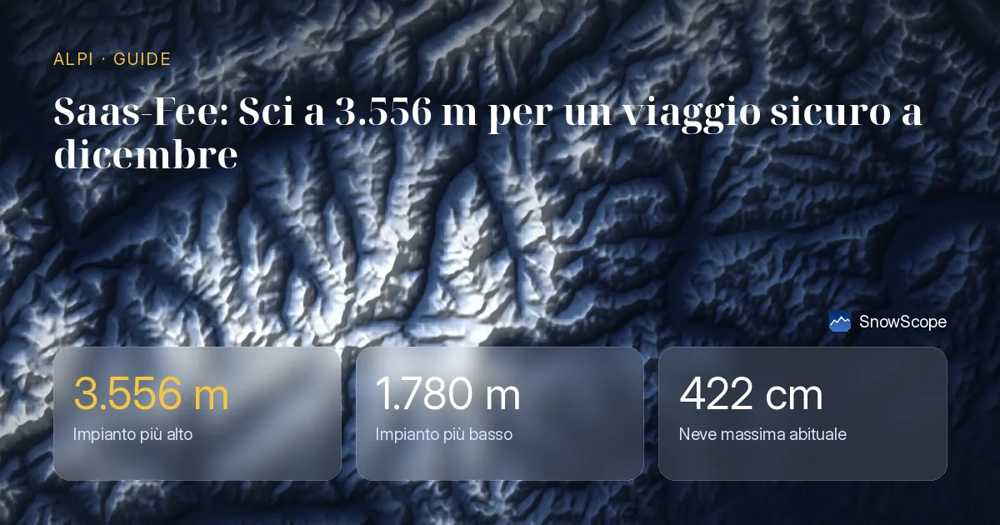

Saas-Fee: Sci a 3.556 m per un viaggio sicuro a dicembre
Saas-Fee ha il 100 % degli inverni passati con almeno 30 cm di neve in cima entro metà dicembre. Se cerchi un viaggio dove la neve è sicura, devi guardare all'altezza degli impianti. Questa località raggiunge i 3.556 m, uno dei punti più alti dove sciare in Svizzera.
Le previsioni neve in tempo reale per Saas-Fee nell'app SnowScopeAltezza neve, allerte powder e mappa 3D, gratis.
Una scala di altezze dal villaggio alla cima
L'area sciistica di Saas-Fee è costruita come una scala che sale molto in alto nell'aria fredda. L'impianto più basso parte a 1.780 m nel villaggio, e l'impianto più alto raggiunge i 3.556 m. Questo dà alla località un dislivello totale di 1.776 m. Ci sono 30 impianti in totale e l'area sciistica ha 48 km di piste. Poiché la località è così alta, gli spessori della neve cambiano molto man mano che sali.
Alla base degli impianti, lo spessore abituale di dicembre è di 34 cm. Se sali a metà montagna a 2.668 m, quello spessore abituale aumenta a 68 cm. Proprio in cima, lo spessore abituale per dicembre è di 159 cm. In un dicembre profondo, la cima può avere fino a 254 cm, mentre anche un dicembre scarso di solito ha 69 cm a quell'altezza. Questo dislivello è la ragione principale per cui la località resta aperta quando posti più bassi potrebbero avere difficoltà.

Settimane di dicembre e probabilità di neve
La nostra storia della neve di 46 inverni passati mostra che il momento del tuo viaggio conta per le piste più basse. Durante la prima settimana di dicembre, dall'1 al 7 dicembre, solo il 33 % degli inverni passati aveva 30 cm o più di neve alla base. Questo numero sale a 5 inverni su 10 per la seconda settimana. Entro la fine del mese, dal 22 al 28 dicembre, la possibilità di avere 30 cm alla base è dell'85 %.
Se guardi a metà montagna a 2.668 m, i numeri sono molto più stabili. Nella prima settimana del mese, 8 inverni su 10 hanno almeno 30 cm di neve. Questo aumenta a circa 9 inverni su 10 per la seconda settimana. In cima agli impianti, la neve è quasi garantita. Dall'8-14 dicembre in poi, il 100 % degli inverni passati nei nostri registri aveva almeno 30 cm di neve a 3.556 m.
Prezzi degli skipass in franchi svizzeri
Abbiamo controllato i costi sul sito ufficiale per la stagione invernale 2026-27. Un pass giornaliero per adulti per Saas-Fee e Saas-Almagell costa CHF 86. Se stai pianificando un soggiorno più lungo, un pass per adulti di 6 giorni costa CHF 419. Questi prezzi sono per sciatori dai 20 anni in su.
Questi prezzi riflettono l'alta quota e il sistema di impianti fornito. Anche se la Svizzera è spesso vista come costosa, questi prezzi ufficiali sono fissati per l'intera stagione invernale. È importante prenotare tramite il sito ufficiale per ottenere queste tariffe specifiche per l'inverno 2026-27.
Saas-Fee o Grimentz-Zinal
Quando guardi altre opzioni nella regione del Vallese, Grimentz-Zinal è una forte alternativa. I prezzi lì sono più bassi, con un pass giornaliero per adulti Val d'Anniviers che costa CHF 75,00 e un pass di 6 giorni che costa CHF 339,00. Grimentz-Zinal ha anche un'area sciistica più grande con 71 km di piste e 23 impianti.
Tuttavia, la differenza di altezza è significativa. L'impianto più alto a Grimentz-Zinal è a 2.873 m, che è più basso del punto di metà montagna di Saas-Fee. In un dicembre abituale, la cima di Grimentz-Zinal ha 99 cm di neve, mentre Saas-Fee ne ha 159 cm in cima. Se segui il freddo, l'altezza extra a Saas-Fee offre più sicurezza di neve. Lo spessore abituale il 15 dicembre alla base di Grimentz-Zinal è di 29 cm, rispetto ai 34 cm a Saas-Fee.
Un controllo a lungo termine sui trend della neve
Nella nostra storia della neve di 46 inverni passati, possiamo vedere come le medie sono cambiate. In cima agli impianti, la media di dicembre era di 166 cm durante i primi 15 inverni dal 1980-81 al 1994-95. Negli ultimi 15 inverni dal 2011-12 al 2025-26, questa media era di 139 cm. A metà montagna, la media è scesa da 70 cm a 63 cm. Interessante, la base è rimasta a 32 cm in entrambi i periodi.
Guardando alla stagione attuale, la neve ora al 13 novembre 2026 è di 0 cm alla base e 27 cm in cima. Le previsioni per i prossimi 7 giorni sono promettenti, con 34 cm di neve fresca attesi alla base e 80 cm in cima. Le prospettive di due settimane per metà montagna e oltre mostrano un intervallo da 35 cm a 70 cm di neve fresca. Questo mostra quanto velocemente la montagna può cambiare mentre entriamo in dicembre.
Consigli per sciatori
- Resta sopra l'altezza di metà montagna di 2.668 m per le condizioni di neve più sicure a inizio dicembre.
- Prenota il tuo viaggio per la settimana del 22-28 dicembre se vuoi una possibilità dell'85 % di avere almeno 30 cm di neve al livello del villaggio.
- Controlla il bollettino delle valanghe prima di considerare qualsiasi sci fuori pista, specialmente ad alte quote.
- Acquista il pass di 6 giorni Saas-Fee e Saas-Almagell per CHF 419 sul sito ufficiale per il miglior valore.
Altre mappe (siti esterni)
Riferimenti e crediti
- Saas-Fee/Saastal, official ski pass prices 2026-27 www.saas-fee.ch/en/winter-in-the-saas-valley/ski-pass-prices/saas-fee
- Val d'Anniviers tourism, official ski pass prices 2026-27 www.valdanniviers.ch/fr/Z33617/tarifs-ski-grimentz-zinal
- SnowScope, December snow at three heights and today's snow map snowscope.app/
Su questi numeri
Numeri della neve: storico neve SnowScope, 46 inverni passati (1980-81 - 2025-26) a tre quote di ogni località (un modello del passato corretto per la quota: una stima per un'area, non misure della località); dati di dicembre calcolati dalle altezze giornaliere di quegli inverni. Neve attuale e tendenza a due settimane: previsioni SnowScope (tendenza da ECMWF e GFS, un intervallo, non una promessa). Impianti e piste: mappatura OpenSkiMap. Prezzi: le pagine ufficiali qui sotto, lette il 2026-11-13; i prezzi possono cambiare, verificare prima di prenotare.
Bollettini valanghe ufficiali: SLF – WSL Institute for Snow and Avalanche Research
Cita questo articolo
Per ricerca, didattica o stampa: numeri e grafici sono liberamente riutilizzabili con licenza CC BY 4.0 citando così.
SnowScope (2026), Saas-Fee: Sci a 3.556 m per un viaggio sicuro a dicembre, https://snowscope.app/blog/it/2026/11/saas-fee-december-ski-value-high-altitude-2026.html, consultato il 2026-11-14
SnowScope (Atlas Labs). (2026, November 14). Saas-Fee: Sci a 3.556 m per un viaggio sicuro a dicembre. SnowScope snow reports. https://snowscope.app/blog/it/2026/11/saas-fee-december-ski-value-high-altitude-2026.html
BibTeX
@misc{snowscope2026saasfeedecemberskivalueh,
author = {{SnowScope (Atlas Labs)}},
title = {Saas-Fee: Sci a 3.556 m per un viaggio sicuro a dicembre},
year = {2026},
month = nov,
howpublished = {\url{https://snowscope.app/blog/it/2026/11/saas-fee-december-ski-value-high-altitude-2026.html}},
note = {Published 2026-11-14 13:29 UTC; accessed 2026-11-14}
}· CC BY 4.0 · Metodi, dati e strumenti →
Saas-Fee: neve e temperatura per quota, quest'inverno vs lo scorso (strumenti) →
Segui Saas-Fee
Gratis: un messaggio quando arriva la neve e il meteo ogni mattina.